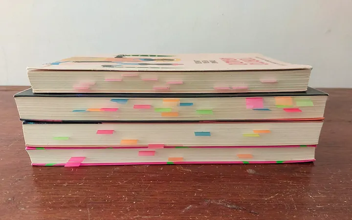

16-07-2023
Li bastante durante a pandemia, mas com a volta das minhas aulas presenciais, passei por uma ressaca literária. Felizmente, tenho colocado o hábito de ler de volta na minha vida.
Recentemente terminei a trilogia de livros sobre criatividade do Austin Kleon, é uma coleção cheia de dicas e insights. Qualquer pessoa deveria ler, sendo do “meio criativo” ou não. Afinal, somos todos criativos.
Junto com o hábito, comecei uma prática que me fez aproveitar mais a leitura, e achei que daria um artigo sobre — mesmo não sendo algo inovador ou revolucionário.
Dificilmente alguém lembra de tudo que já leu. Por isso é importante destacarmos o que realmente importa, ou o que soou interessante. E marcações é uma ótima maneira de fazer isso.
Tenho usado o Google Play Books para ler, pois além de ser uma loja de livros digitais, ele também serve de leitor e biblioteca para arquivos alternativos que não vêem da própria loja (recomendo o formato .epub, por ser bastante flexível, é bastante semelhante ao .mobi do Kindle).
No app, podemos fazer marcações em 4 cores: Amarelo, Verde, Azul e Laranja. Então acabei criando uma utilidade para as três primeiras:
Caso não queira usar o Play Books, recomendo o Lithium como alternativa. Sua interface é intuitiva e tem uma variedade maior de cores.
Simples assim. Fazer essas marcações durante a leitura me ajuda caso eu queira consultá-lo futuramente. Ao invés de ler uma página, capítulo ou o livro inteiro, basta eu navegar pelas minhas marcações.
Para quem prefere livros físicos, essa técnica também pode ser utilizada. Caso não queira usar marca-textos, marcadores de páginas adesivos podem ser um bom substituto.

E isso não deve só se limitar a livros. Seja de uma matéria ou algo que você esteja pesquisando, destaque o necessário.
Usar cores pode não ser tão flexível para certos casos. Então vou apresentar duas alternativas que podem ser utilizadas em situações mais gerais:
O Tiago Forte ensina um método de marcação chamado “Progressive Summarization”. Onde ele mostra como separar o essencial em três camadas, para melhor visualização e entendimento, seja de algum livro ou texto da internet.
Em 4 passos, o Pinho ensina a como estudar de uma forma eficaz, constante e que esteja sempre provocando nossa curiosidade para irmos além.
Fico muito feliz caso tenha chegado até aqui! Meu último post acabou tendo uma boa visibilidade e gostaria de te convidar a ler meus outros textos caso não tenha lido ainda.